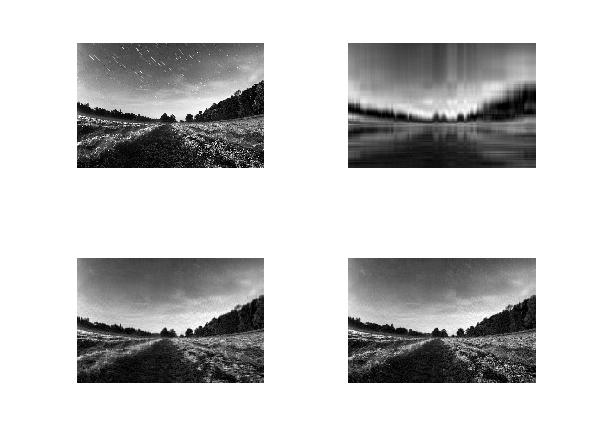

Approximating matrix with SVD
Consider that we have a matrix A whose columns are m observations
and each of n rows are features. In this way we have non square nxm
matrix. Like we can factor numbers into product of primes, singular
vector decomposition method, or SVD in short, suggests that we can
factor any matrix into components. Accordingly, any matrix can be
factorized into $A=U \Sigma V^T$.
Let’s look at matrices $AA^T$ and $A^TA$.
Both matrices are symmetric, square, at least positive semidefinite (have eigenvalues
which are zeros or positive numbers), both have equal positive eigenvalues, and the rank
r equals to the rank of original matrix A.
Moreover, let’s assume that the column vectors $u_i$ are the eigenvectors of
$A A^T$, and column vectors $v_i$ are the eigenvectors of
$A^T A$. Both matrices have same positive eigenvalues.
The square roots of these eigenvalues are singular values.
If we now construct the matrices $U$ and $V$ using the corresponding
column vectors comprising eigenvectors (after normalization), it is easy to
show that $U^T U=I$ and $V^T V=I$,
given that the rows of these matrices are orthonormal.
Let’s get back to the proposition of SVD that states $A=U \Sigma V^T$.
Assume now that the columns of $\Sigma$ are
ordered from largest to smallest (and so are the eigenvectors).
To get $A=U \Sigma V^T$, we need to solve for three unknowns, namely:
$U, \Sigma, V$. Let’s write few facts:
$$A=U \Sigma V^T$$
$$A^T=V \Sigma U^T$$
We can now write $AA^T$ and $A^TA$ as follows:
$$A^T A= V \Sigma V^T$$
Or after some algebraic manipulations we get:
$$A^T AV= V \Sigma^2$$
It is easy to see that $V^T$ comprises eigenvectors and
$\Sigma^2$ are eigenvalues of $A^T A$.
In a similar fashion we can find $U$:
$$AA^T= U \Sigma V^TV \Sigma U=U \Sigma^2 U^T$$
$$AA^T U= U \Sigma^2$$
U and V are now vector of eigenvectors of $A^T A$ and
$AA^T$ correspondingly, and $\Sigma^2$
are eigenvalues (note, the positive eigenvalues are equal for both matrices).
Now, let’s derive a useful equation. Since we have:
$$ \left[
\begin{array}{ccc}
u_1^1&\cdots&u_1^m\\
\vdots & \ddots & \vdots\\
u_n^1 & \cdots & u_n^m\\
\end{array}
\right]
\left[
\begin{array}{ccc}
\sigma_1&\cdots&0\\
\vdots & \ddots & \vdots\\
0 & \cdots & \sigma_m\\
\end{array}
\right] =
\left[
\begin{array}{ccc}
\sigma_1u_1^1&\cdots&\sigma_mu_1^m\\
\vdots & \ddots & \vdots\\
\sigma_1u_n^1 & \cdots & \sigma_mu_n^m\\
\end{array}
\right]
$$
Therefore, we can obtain:
$$ A = \left[
\begin{array}{ccc}
u_1^1&\cdots&u_1^n\\
\vdots & \ddots & \vdots\\
u_n^1 & \cdots & u_n^n\\
\end{array}
\right]
\left[
\begin{array}{ccc}
\sigma_1&\cdots&0\\
\vdots & \ddots & \vdots\\
0 & \cdots & 0\\
\end{array}
\right]
\left[
\begin{array}{ccc}
v_1^1&\cdots&v_1^m\\
\vdots & \ddots & \vdots\\
v_m^1 & \cdots & v_m^m\\
\end{array}
\right]^T \approx
\sigma_1 u_1 v_1^T + \cdots + \sigma_r u_r v_r^T
$$
The above equation shows that we can factorize the entire matrix A into so called atoms. Moreover, we can
exclude eigenvectors for which $\sigma$ is too small. In this manner we can
approximate the matrices with some loss of information.
A picture worth the thousand words. Let’s show the beauty of SVD using real example.
We will use Octave to demonstrate how image compression can be done easily with SVD.
Here is the code we have used to compress the image:
[I, map] = imread ("nature.bmp");
J = rgb2gray(I);
function [Uc, Sc, Vc] = compress_matrix(A, N)
[U, S, V] = svd(A);
Uc = U(:, 1:N);
Sc = S(1:N, 1:N);
Vc = V(:, 1:N);
end
[Uc, Sigmac, Vc] = compress_matrix(J, 5);
Jc5 = uint8(Uc * Sigmac * Vc');
[Uc, Sigmac, Vc] = compress_matrix(J, 50);
Jc50 = uint8(Uc * Sigmac * Vc');
[Uc, Sigmac, Vc] = compress_matrix(J, 100);
Jc100 = uint8(Uc * Sigmac * Vc');
figure
subplot(2,2,1)
imshow(J)
subplot(2,2,2)
imshow(Jc5)
subplot(2,2,3)
imshow(Jc50)
subplot(2,2,4)
imshow(Jc100)
